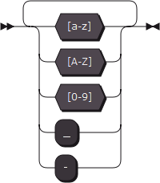
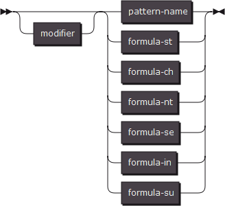
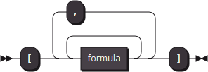
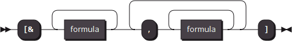
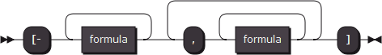

lexical grammar
Important Acknowledgments:
Thanks to the syntax diagram build service available at http://www.bottlecaps.de/rr/ui

lexical grammar1. Overview2. Pattern3. Pattern Name4. Formula4.1. formula-st4.2. formula-ch4.3. formula-nt4.4. formula-se4.5. formula-in4.6. formula-su4.7. reference5. Modifier5.1. modifier-om5.2. modifier-an5.3. modifier-op6. Specified ending character7. Context System7.1. context limit7.2. context lead
1. Overview
Lexical parser is part of IGP parser.
The lexical parser follows the word slicing rules described by lexical grammar to handle the source code and generate a terminator vocabulary table.
Lexical grammar is a series of word patterns, each of which occupies a single line.
You can insert single line comment anywhere using '#'.
2. Pattern
Every word pattern have the following format.

As you can see, the minimal format of the word pattern as follow:

We will get started by telling the format of each part of this pattern.
3. Pattern Name
Pattern name is combination of legal name strings combined by character '.'.

So let's have a look at what a legal name string looks like.

Do you remember the Name List in the diagram I just show you at the beginning.
A token owns more than one name,but maybe those names come from the same pattern.
This feature, I call it layered name mapping system.
In the pattern-name string, every dot develops a new mapping layer.
To explain this feature, let's see an example.
keyword.branch.if : "if"
Here is a pattern which captures a keyword written "if" to be a terminator.
This terminator will own three names:
xxxxxxxxxxkeyword.branch.ifkeyword.branchkeyword
This feature is prepared for the next stage of source code parsing, the syntax parsing stage.
4. Formula
One of the most important part of pattern is the formulas, this part tells parser what kind text you want to capture.
In the example above, this part appeared to be a sequence of character enclosed by a pair of double quoter.
Actually, there a six formats of formulas in all, the one above is one of them.

4.1. formula-st
"C-Style-String" stands for the strings those obey the string grammar in the C programming language.
You can use the escape characters to express characters you cannot input directly.
Formula-st captures the text which is exactly same as what you wrote.
4.2. formula-ch

Again "C-Style-String" stands for the strings those obey the string grammar in the C programming language.
But formula-ch takes the different action from formula-st.
It captures one character once, this character must appeared at least once in the C-Style-String.
4.3. formula-nt
Formula-nt captures a character once, this character must not appeared in the C-Style-String.
4.4. formula-se

Formula-se has two function, one of them is to enclose two or more formulas to be one unit by a pair of square quoter, this makes these formulas can be modified by one modifier.
The second one is to combine two or more sequences of formulas by ',' to make branches of possibility.
A number of branches of possibility can be collected to be a possibility set.
Formula-in and formula-su are two operations defined on the possibility set.
4.5. formula-in

Formula-in has the same function as the first function of formula-se.
The second function of formula-in is to perform an intersection operation between two or more possibility set.
4.6. formula-su

Just like formula-in, the second function of formula-su is to perform a subtraction operation between two or more possibility set.
The first possibility set will become the minuend and the following possibility sets will become the subtrahend.
4.7. reference
The sixth format of formula is written to be a name of existing pattern.
The pattern you are going to refer to must be a pattern defined with an inline-mark.

There are serial inline patterns have already existing before you define them,they are called built-in patterns.
These built-in patterns were expressed to be some format that will be used frequently.
Built-in patterns were implemented by code directly to be faster, anyway we can also express them by the lexical grammar to you to see what kind of text do they like.
xxxxxxxxxx~numb : '01'~numo : [numb,'234567']~numd : [numo,'89']~numh : [numd,'abcdefABCDEF']~lower: 'abcdefghijklmnopqrstuvwxyz'~upper: 'ABCDEFGHIJKLMNOPQRSTUVWXYZ'~letter:[lower,upper]~space: ' \n\r\t\v'~punct: '`~!@#$%^&*()-=_+[]{}|;:",./<>?\'\\'There is one more built-in pattern that could not be expressed in lexical grammar, any, this pattern will capture any character once.
The layered name mapping system is available any time, that means you can use a high level name to collect two or more patterns in one possibility set this will perform the same operation as formula-se performs.
For example:
xxxxxxxxxx~A.X : 'I'~A.Y : 'J'T : A ===> T : [A.X,A.Y] ===> T : ['I','J'] ===> T : 'IJ'5. Modifier
As you can see, there is an optional unit before the six kind of formulas, which is called modifier.
Modifiers change the action of parser.

5.1. modifier-om
Modifier-om is written '+', makes the parser try to capture the formula one or more times.
5.2. modifier-an
Modifier-an is written '*', makes the parser try to capture the formula any number of times.
5.3. modifier-op
Modifier-op is written '?', makes the formula become optional for parser to capture.
6. Specified ending character
If necessary, a specified ending character can be determined.
The specified ending character is a formula defined after ';'.
Parser will try to match the first character in the formula.
If the minimal expression of this formula is empty, means that the ending of this pattern can be the end of the source code.
7. Context System
A page of source code could have more than one context, each of them has a unique name.
The default context is named "global".
7.1. context limit
Unless explicitly declared all patterns can only be used in the global context.
You can declare one or more names of context which your pattern could be used in.
These context names are listed after the pattern name using a '@' symbol.
7.2. context lead
A token could lead a change of context, you can perform this action by declare a context name after the whole pattern using '->'.